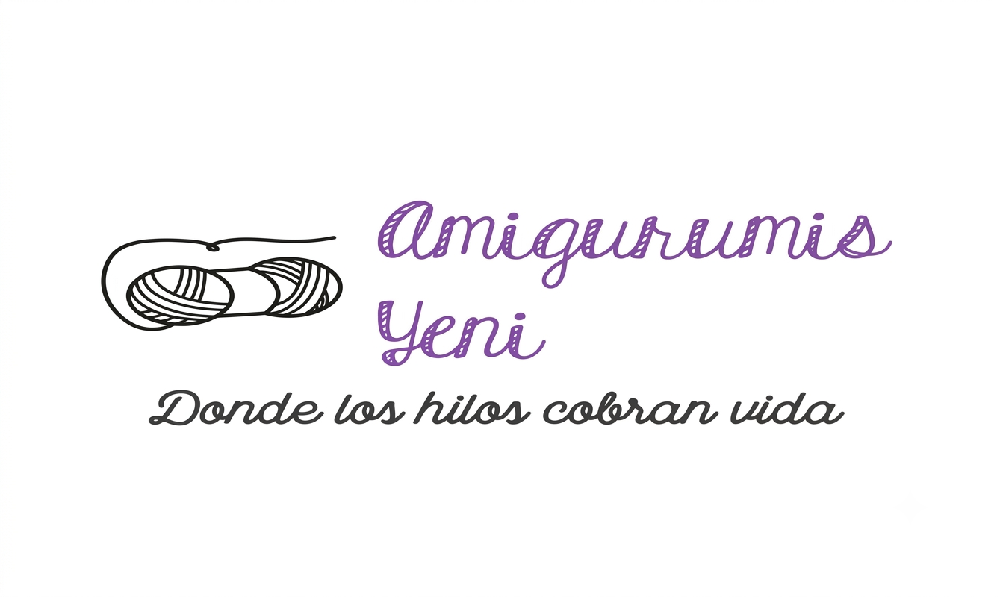
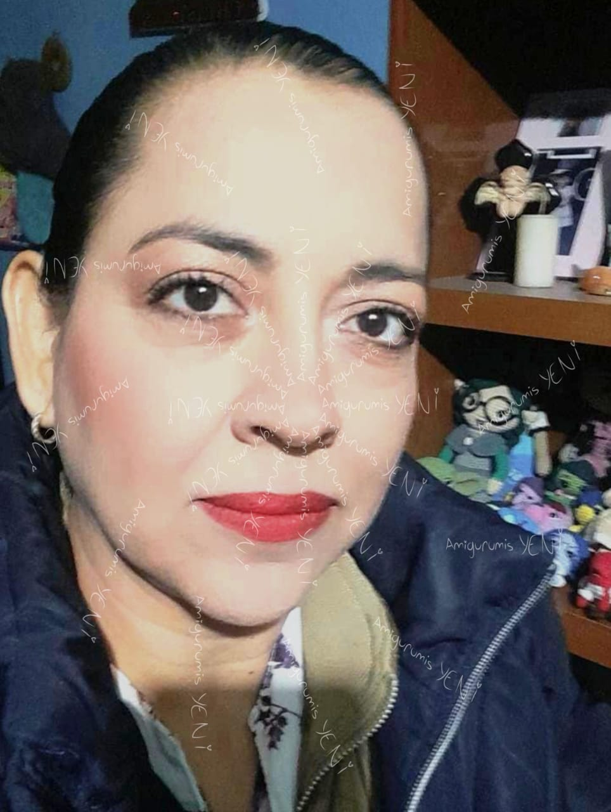
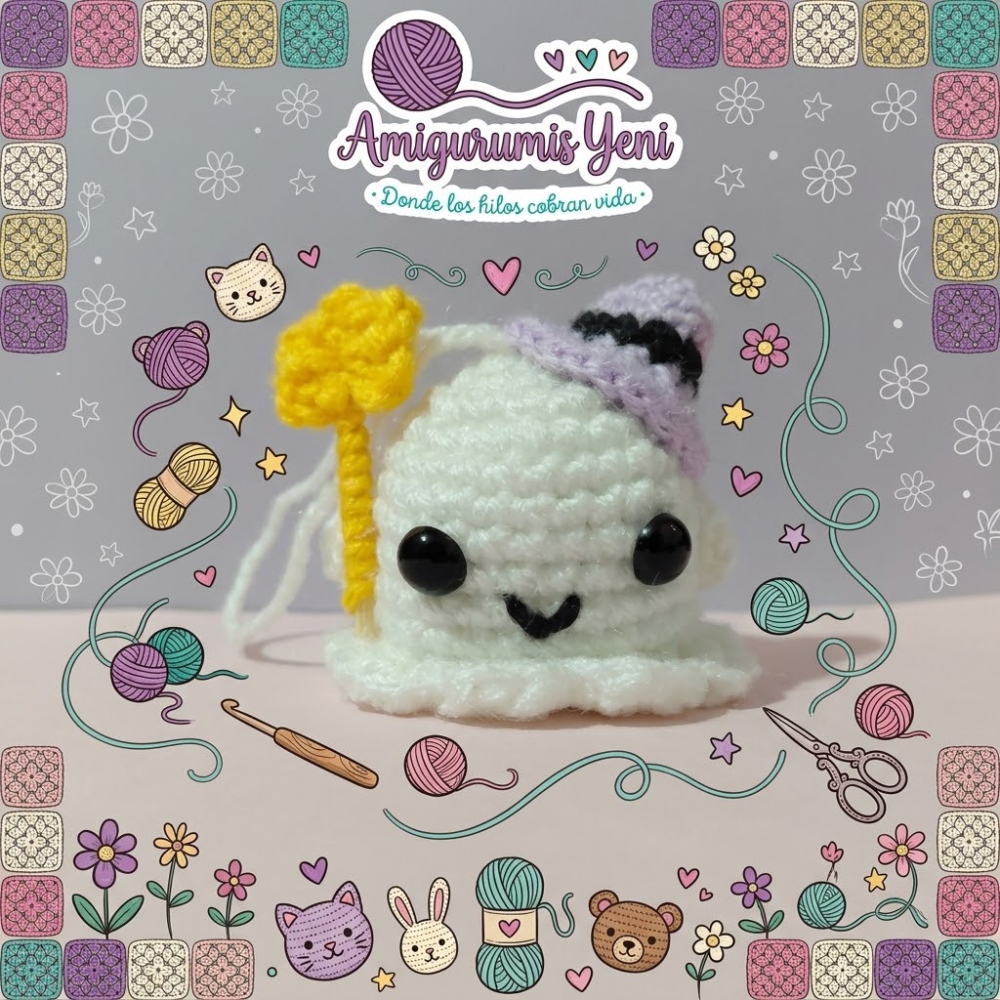

Acerca de:

Amigurumis
Tejiendo Sonrisas: La Magia de los Amigurumis y cómo darle vida a tus creaciones.
Cada puntada está pensada para transmitir alegría. Utilizamos materiales suaves e hipoalergénicos de la más alta calidad para garantizar que cada muñeco sea seguro, duradero y muy apapachable.
Read More
La dueña
Tejiendo sueños con hilos y corazón: la historia detrás de cada amigurumi.
Hola, soy Yeni. Empecé este proyecto como un pasatiempo y poco a poco se convirtió en mi pasión. Me encanta transformar un simple ovillo de hilo en un personaje lleno de vida y personalidad para ti.
Read More
Nosotros
Más que amigurumis: un espacio cálido, creativo y lleno de ilusión.
Buscamos crear una comunidad donde los amantes del crochet y los detalles artesanales encuentren un lugar especial. Cada pedido se empaca con muchísimo cariño para que recibas un pedacito de nuestra ilusión.
Read More